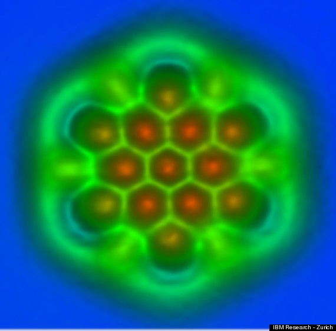
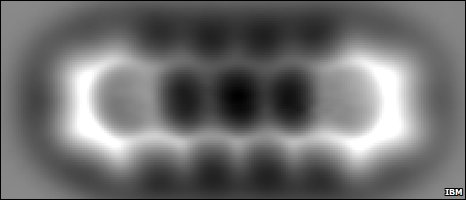
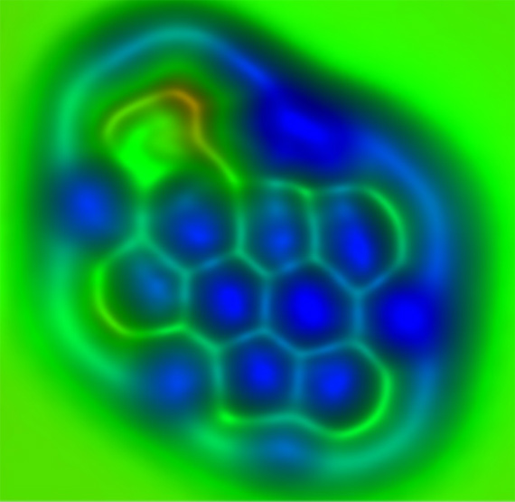

Научно-исследовательское подразделение IBM Research в Цюрихе опубликовало картинки, которые удалось сгенерировать с помощью сканирующего атомно-силового микроскопа (АСМ). На изображениях можно различить отдельные атомы углерода в шарообразной молекуле C60. Видны даже химические связи между атомами, то есть перекрывающиеся электронные облака («размазанные» электроны, в терминологии Шрёдингера).

В 2009 году именно эта группа учёных IBM впервые получила фотографию отдельной молекулы: вот этот исторический снимок молекулы пентацена из пяти бензольных колец. Та фотография была сделана при температуре 5°K в сверхвысоком вакууме:

Сейчас учёные значительно увеличили разрешение АСМ, хотя работает он на прежнем принципе. На конце чувствительной головки АСМ помещена отдельная молекула угарного газа (CO), которая раскачивается над сканируемой поверхностью. При приближении к «чужим» атомам наша молекула испытывает силы притяжения и слегка меняет амплитуду покачиваний.
Замеряя изменения в амплитуде, АСМ рисует изображение сканируемой поверхности с невероятным разрешением 3 пикометра (3 × 10-12 м), что чуть больше 1/100 от диаметра атома углерода. Синие и зелёные цвета на «фотографии» — это условность.
Столь высокая разрешающая способность микроскопа открывает удивительные перспективы: мы можем своими глазами увидеть, как происходят химические реакции на молекулярном уровне, а также лучше изучить структуру материалов с уникальными свойствами, таких как графен. Теоретически было известно, что атомы углерода в графене и других веществах находятся на разном расстоянии друг от друга и отличаются силой связей: если в том же графене они сильные, то в молекулах, например, ароматических углеводородов связи гораздо слабее, хотя атомная решётка там похожей гексагональной формы. Теперь мы можем своими глазами увидеть эту разницу.

Лучшее изучение молекулярной структуры продвинет вперёд исследования новых материалов и позволит создать более эффективные органические фотоэлементы, органические светодиоды (OLED) и другие материалы.
Результаты исследования IBM Research опубликованы в журнале Science (http://www.sciencemag.org/content/337/6100/1326).